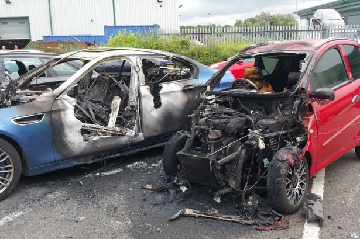
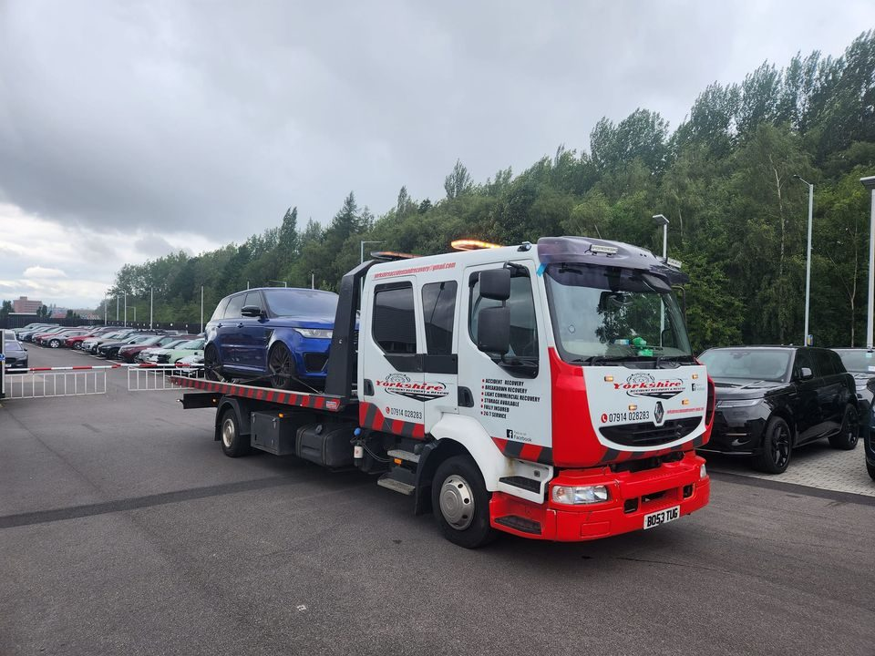
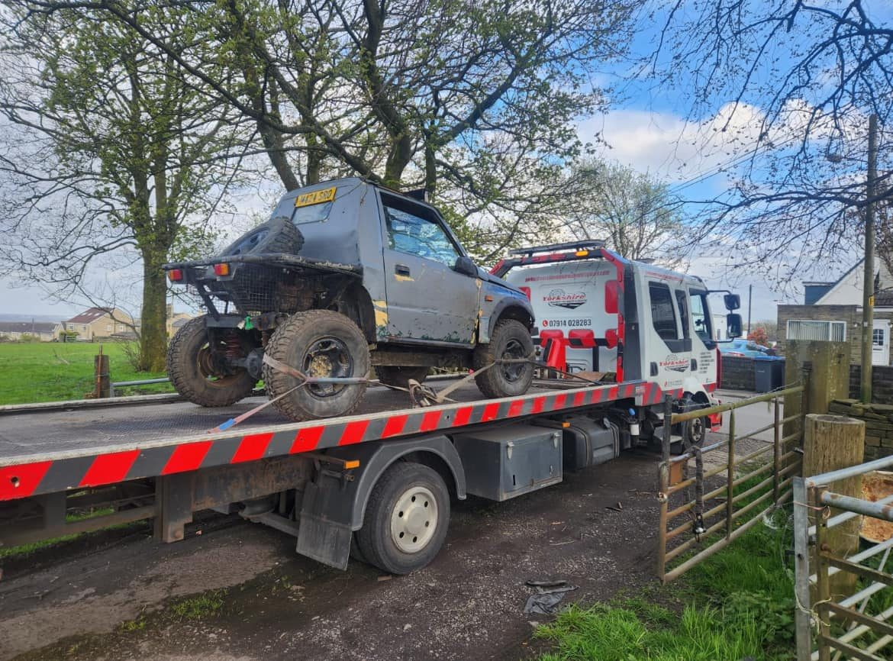
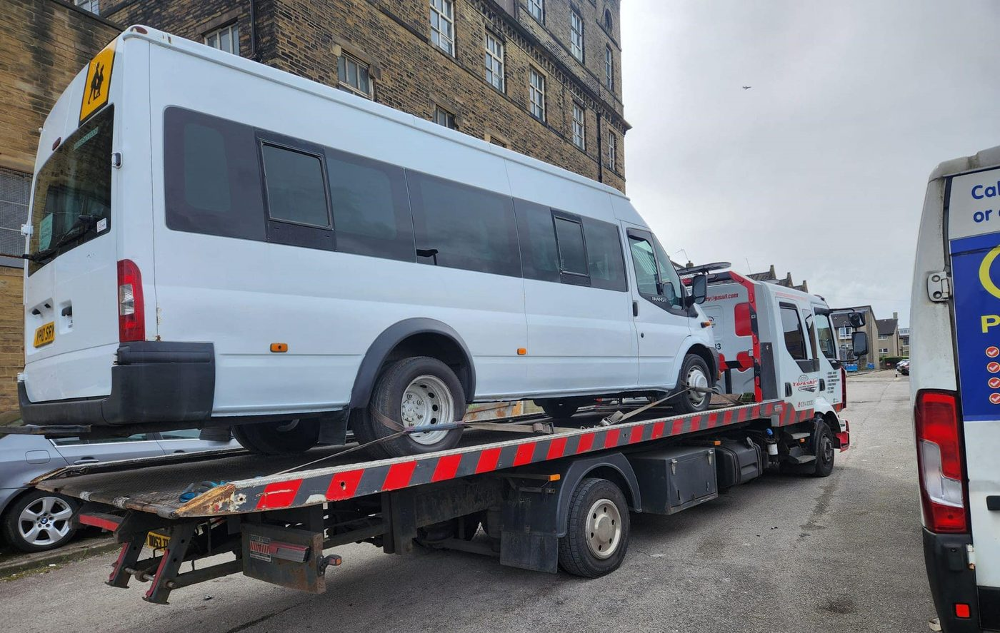
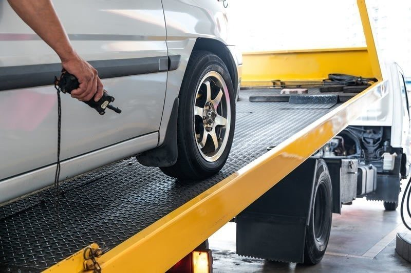
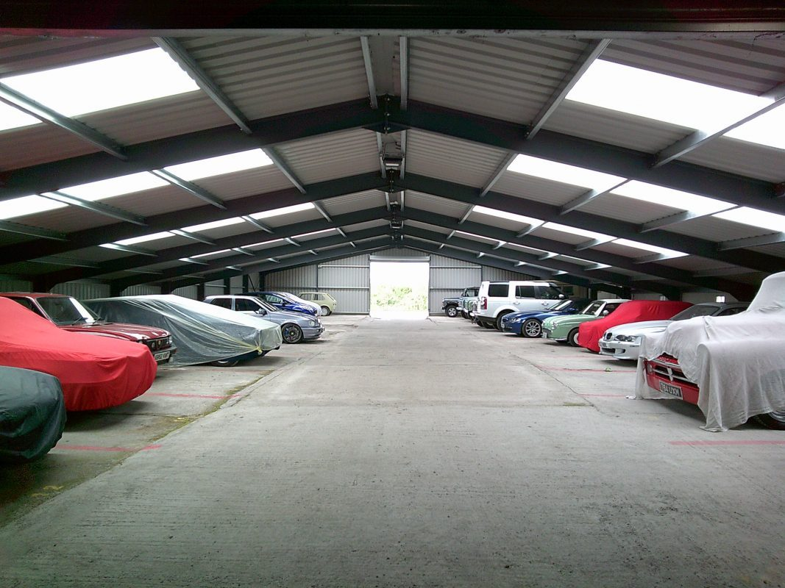

Accident Recovery
Recovery after a collision: safe, careful and coordinated with your insurer.
Learn moreBroken down or been in an accident? Our family-run Bradford team is on call 24 hours a day, often with you within 30 minutes, with honest prices and no hidden fees.



Whatever has happened to your vehicle, we have the equipment and experience to move it safely.

Recovery after a collision: safe, careful and coordinated with your insurer.
Learn more
Stranded at the roadside? We come to you and take you and your vehicle where you need to go.
Learn moreVans, minibuses and light commercial vehicles recovered quickly to keep your business moving.
Learn more
Secure, covered storage in Bradford, short or long term, with recovery to the door.
Learn moreWe've recovered everything from high-value sports cars and 4x4s to MPVs and light commercial vehicles. Some are roadworthy and just need getting from A to B. Others are damaged or won't run, and those need extra care.
Clear and straightforward from the first call to the final drop-off.
Ring our 24-hour line and tell us where you are and what's happened. We'll get a truck on its way.
In many cases we can be with you inside half an hour, keeping disruption and risk to a minimum.
We use the right equipment for the job and can usually load your vehicle within minutes, even if it won't run.
Jump in the cab with our driver. We'll take you and your vehicle home, to a garage or to work, your choice.
Reviews from drivers, businesses and tradespeople across Bradford.
“What an absolute life saver after breaking down. A friend recommended this company, and not only were they fast and efficient but very well priced. They proved to be such a good company I've since used them twice to collect a bike and car for me.”
“This service was excellent. Picked me up really quickly and put my car in storage and handled everything with my insurance. Dropped us off on the way and helped to unload the car. Nothing was too much trouble.”
“I've used this company a couple of times recently. Their prices are good, they got to me in good time on both occasions and got my van back to mine, no dramas.”
“I have used this company a few times in the past year to move motorbikes around. Great service, great price, and the bikes have been looked after and transported with care.”
A few recent recoveries from our team.
Call our 24-hour line and speak to someone who can help straight away.